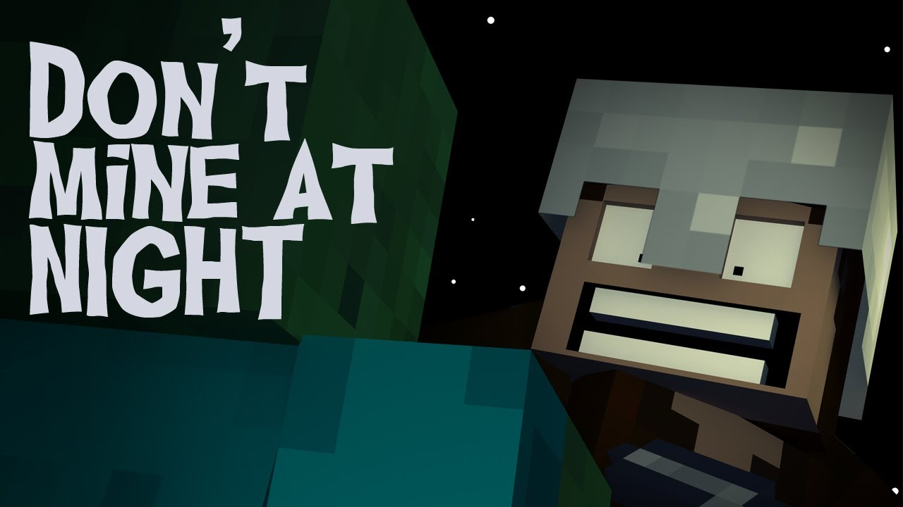

Home
News
Dropdown
Minecraft
Destiny
Just Shapes & Beats
Minecraft
Hello you are going to read about Minecraft on this page
Once this small project started to take off, the creator released it in an updated format as Minecraft, but that is still a far cry from the game we know today on PC and consoles. It was very basic, for the most part, but early versions of Minecraft allowed for more than just building. What made the game so unique is that it was also a resource management simulation. It allowed players to gather the resources they needed to create, so the creations meant more to them since they had to build them with parts they had collected on their own. Before the end of 2009, several modes had been added to Minecraft. They include Survival, Indev, and Infdev. At this point, the game was still in its alpha stages.
